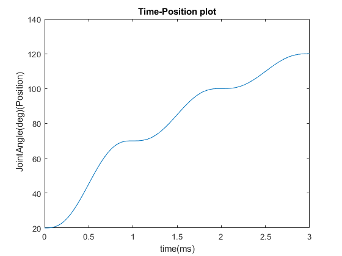
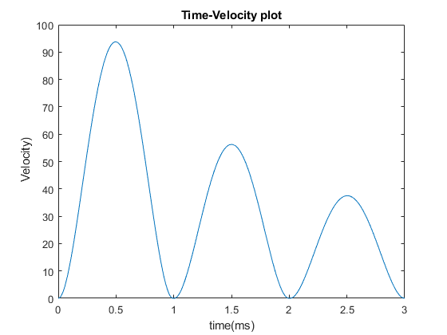
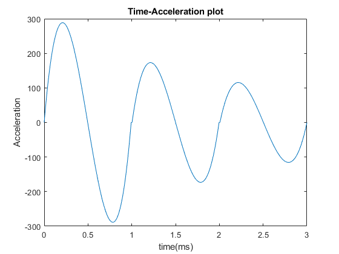

HW 4
Contents
QUESTION 1
Quintic Polynomial Trajectory for 1 Link arm Given q0 = 20 ,q1 = 70, q2= 100 , q3 = 120 time t0= 0 , t1 = 1 , t2 = 2 , t3 = 3; given velocities and accelerations are zero qi = initial position vi = initial velocity aci = initial acceleration qf = final position vf = final velocity acf = final acceleration ti = initial time tf = final time qd = position trajectory vd = velocity trajctory ad = acceleration trajectory
clear all; close all; clc;
For time ti = 0 qi = 20 and qf = 70 tf= 1
d1= [20,0,0,70,0,0,0,1];%[qi,vi,aci,qf,vf,acf,ti,tf] %qi = d(1); vi = d(2); aci = d(3); qf = d(4); vf = d(5); acf = d(6); ti = d(7); tf = d(8); [qd1,vd1,ad1] = Quintic(d1(1),d1(2),d1(3),d1(4),d1(5),d1(6),d1(7),d1(8));
For time ti = 1 qi = 70 and qf = 100 tf= 2
d2 = [70,0,0,100,0,0,1,2]; [qd2,vd2,ad2]= Quintic(d2(1),d2(2),d2(3),d2(4),d2(5),d2(6),d2(7),d2(8));
For time ti = 2 qi = 100 and qf = 120 tf= 3
d3 = [100,0,0,120,0,0,2,3]; [qd3,vd3,ad3]= Quintic(d3(1),d3(2),d3(3),d3(4),d3(5),d3(6),d3(7),d3(8));
plots
t = linspace(0,3,100*3);
plot-1 Time-position
q(1,:) = qd1; q(1,101:200) = qd2; q(1,201:300) = qd3; figure plot(t,q); xlabel('time(ms)'); ylabel(' JointAngle(deg)(Position)'); title('Time-Position plot');
Plot-2 Time-Velocity
v(1,:) = vd1; v(1,101:200) = vd2; v(1,201:300) = vd3; figure plot(t,v); xlabel('time(ms)'); ylabel(' Velocity)'); title('Time-Velocity plot');
Plot-3 Time-Acceleration
a(1,:) = ad1; a(1,101:200) = ad2; a(1,201:300) = ad3; figure plot(t,a); xlabel('time(ms)'); ylabel('Acceleration'); title('Time-Acceleration plot');
Function --> Quintic Polynomial Trajectory Generator
function [qd,vd,ad] = Quintic(qi,vi,aci,qf,vf,acf,ti,tf) t = linspace(ti,tf); c = ones(size(t)); M = [1 ti ti^2 ti^3 ti^4 ti^5; 0 1 2*ti 3*ti^2 4*ti^3 5*ti^4; 0 0 2 6*ti 12*ti^2 20*ti^3; 1 tf tf^2 tf^3 tf^4 tf^5; 0 1 2*tf 3*tf^2 4*tf^3 5*tf^4; 0 0 2 6*tf 12*tf^2 20*tf^3]; b = [qi; vi; aci; qf; vf; acf]; a = inv(M)* b; qd = a(1).*c + a(2).*t +a(3).*t.^2 + a(4).*t.^3 +a(5).*t.^4 + a(6).*t.^5; vd = a(2).*c +2*a(3).*t +3*a(4).*t.^2 +4*a(5).*t.^3 +5*a(6).*t.^4; ad = 2*a(3).*c + 6*a(4).*t +12*a(5).*t.^2 +20*a(6).*t.^3; % figure % plot(qd) % figure % plot(vd) % figure % plot(ad) end